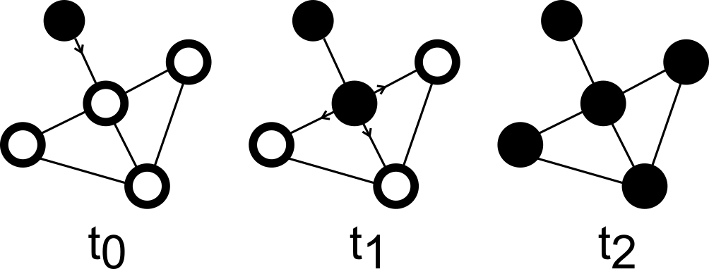
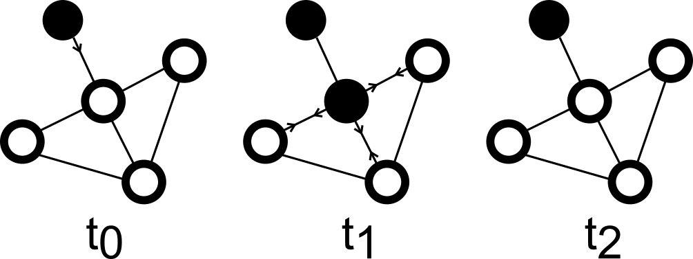

Introduction
In chapter two of her book, How Insurgency Begins, Janet Lewis draws inaccurate conclusions about the types of social environments that permit rebel groups to become viable after launching. These inaccuracies stem from Lewis’ flawed assumptions about the flow of rumors through communities and about the value of the information held by civilians. Ethnically homogenous communities may promote viability under certain conditions, but so too may very sparse and very dense, ethnically heterogenous communities.
Janet Lewis defines a rebel group as “viable” when it poses a minimal threat to the state (Lewis 34). Prior to achieving viability, rebel groups are weak (poor) and depend on civilians for support, particularly secrecy (44-45). Civilians, due to living within the same communities as rebels, are assumed to have knowledge of rebel operations that would be significant if shared with the state. Knowing this, rebels spread positive rumors about their rebellion to elicit support and thus secrecy (44-45). Lewis then concludes that ethnically homogenous communities are most conducive to the spread of rumors by rebels and thus best promote rebel group viability (53). There are numerous flaws with this theory.
Knowledge may indeed spread easily from person to person as outlined in Lewis’ model of rumor diffusion, however, rebels are not just trying to spread knowledge, they are trying to spread beliefs. Spreading beliefs is more difficult than Lewis suggests. In this context “rumor” refers to all the ideas that a rebellion would want to spread, which is composed of both knowledge and beliefs. Consider the example where a rebel group has attacked the state. A rebel propagandist would tell their community contacts about the attack, and these contacts would tell others. This process repeats until most people in the community are aware of the attack. Knowledge, the actual information about what transpired, may spread easily. However, consider that the propagandist also shared their beliefs about the attack, that is: their subjective feelings and moral judgement as it relates to the event. After interpreting the knowledge of the event through their own emotional and moral systems, the community contacts may form beliefs about the event that oppose those promoted by the propagandist. Thus the rumor (belief), preferred by the rebels, effectively fails to spread. What if the propagandist was effective in transferring their belief to their community contacts?
Modelling Rumor Diffusion
Unlike what Lewis concludes, if rebel propagandists succeed in changing the beliefs of their immediate contacts, those contacts do not necessarily become effective rumor spreaders themselves (Lewis 50-51). Consider that over a week of regular conversation, a propagandist is able to convince a civilian of the rebellion’s cause. If the civilian were to then share this sentiment with their family, neighbours, and friends, who oppose the beliefs put forth by the rebellion, it is very likely that the civilian will change their stance once again, to align with that of the community. Existing sociology research supports this. By measuring the spread of behavior through different topologies of social networks, Damon Centola (1194) found evidence that “People usually require contact with multiple sources of ‘infection’ before being convinced to adopt a behavior.” In communities where everyone is effectively connected to everyone else (social networks with short path lengths), an individual’s beliefs are influenced by many different people, and thus, before viability, rebel propagandists will lack the influence required to shape the beliefs of an entire community, especially if community members initially oppose them and there are few propagandists.
Table 1
Comparison of Lewis’ and the Proposed Model of Rumor Diffusion| Model | Summary | Visualization |
|---|---|---|
| Lewis’ Model | Rebels can easily gain widespread community support by exploiting how easily rumours diffuse through social networks. |  |
| Proposed Model | Rebels may struggle to gain widespread community support because beliefs are not easy to spread through social networks, especially if community members oppose those beliefs. |  |
Model Analysis
Under this proposed model of rumor diffusion, beliefs spread more easily from person A to person B, if person B’s contacts are unlikely to oppose that belief. Beliefs spread even better then, if they are seen as aligning with existing beliefs and advancing some shared goal. Thus, if rebel groups gain support through the spread of rumors, they do so by spreading the belief that their rebellion is seeking to address a grievance within the community.
Rebel groups can best achieve viability through rumor spreading, when grievances are shared by the entire community. Recall that because civilians have valuable information about rebels, the rebels need to encourage secrecy. Before viability, the rebels are too weak to coerce civilians into secrecy and thus depend on rumor spreading. If civilians had no grievances, the rebels would not be able to convince them of secrecy because the civilians would have nothing to gain from secrecy. If only half of the community shared grievances, secrecy amongst that half may occur but would be ineffective as the other half of the community may become effective state informants. Thus, when civilians have important knowledge about rebel groups, community level grievances must exist throughout the entire community for the rebels to elicit effective secrecy. What can we expect about rebel group formation when civilians are unlikely to have important information about the rebel groups?
Social Environments that Promote Rebel Group Viability
In other types of social environments, where civilians are unlikely to be able to identify the rebels amongst them, they would be ineffective informants. If civilians have no useful information to share with the state, rebel groups would have no need to induce secrecy, and thus community level grievances are not a requirement in every social environment that promotes rebel group viability. Two properties of social environments make it more likely that civilians would be ineffective state informants: population density and ethnic heterogeneity.
In communities that are both very dense and very sparse, civilians may be ineffective informants. In sparsely populated communities, people interact with each other less, and thus there are fewer established norms of behavior. If there are fewer established norms of behavior, then there is a wider range of behavior that is deemed acceptable. If a wider range of behavior is deemed acceptable, then civilians will struggle to identify rebels by their “abnormal” behavior, because that behavior is less likely to be deemed abnormal. Additionally, in sparsely populated communities, rebels are less likely to interact with civilians in general. In densely populated communities, however, though the rebel is likely to interact with civilians often and there are likely to be established norms of behavior, civilians are less likely to notice and remember a rebel’s abnormal behavior because the average person interacts with so many people.
In communities that are ethnically heterogenous, civilians may be ineffective informants. Even if a civilian believes that someone they met is a rebel, because heterogeneous communities have more fragmented social networks, according to Lewis, the civilian is unlikely to be able to identify the potential rebel to the state.
Thus, sparsely and densely populated, ethnically heterogeneous communities are likely to support rebel group viability, because civilians will struggle to identify the rebels and thus will be ineffective informants for the state. An example of sparsely populated, ethnically heterogeneous communities are those transient towns in which people come and go, and no one really stays for a long time. In such communities, people are less likely to know each other and have strong established norms of behavior, which makes identifying rebels harder. An example of densely populated, ethnically heterogeneous communities are major metropolitan cities. In such communities, due to their diversity, people are less likely to know any random person, and it is hard for any random person to stand out, even rebels (who are trying to be secretive).
Table 2
Properties of Social Environments that Promote Rebel Group Viability| Property | Mechanism |
|---|---|
| Community Level Grievances | Rebel groups spread the rumour that they are addressing some community level grievance to gain support and thus secrecy from the community. |
| Ethnic Heterogeneity | Civilians are unlikely to share the same social networks as the rebels and thus are unable to effectively identify and inform on them to the state. |
| Sparsely Populated | Civilians are less likely to interact with rebels and, due to weak social norms, are less likely to view otherwise suspicious rebel behavior as abnormal. Thus civilians are unable to effectively inform on rebels to the state. |
| Densely Populated | Civilians are less likely to notice rebel activity and, if they do, will struggle to identify rebels due to the large number of people in the community. Thus civilians are unable to effectively inform on rebels to the state. |
Policy Implications and Conclusion
Contrasting this proposed theory of rebel group formation with Janet Lewis’, reveals new policy implications. Firstly, rebel groups can encourage secrecy and thus more easily achieve viability if they can convince civilians that their goals will help to address a community-level grievance. As a result, if counterinsurgents alleviate community-level grievances, it may delegitimize rebellions. Before achieving viability, rebel groups also have limited resources (particularly propagandists) to spend on spreading rumors. Counterinsurgents, with their greater resources, can better exploit social networks to change community attitudes about the rebellion. Lastly, Janet Lewis’ theory explicitly outlines that, in strong states, city-based rebel groups could easily be identified before they achieve viability due to the state’s strong institutions and intelligence networks. Lewis therefore argues that in strong states, city-based rebel groups could only form as a result of large scale democratic protests (Lewis 32-33). This theory disagrees. Even in strong states, if the conditions are right, civilians will lack the ability to identify rebels and thus would be ineffective informants, allowing rebel groups to achieve viability while undetected.
Rebel groups are capable of forming in a myriad of different social environments and thus the assumption that they only form in ethnically homogenous communities limits our ability to protect state-sovereignty, lives, and capital. Rebel groups can form in ethnically homogenous communities, because community level grievances present a mechanism for rebels to gain support and thus encourage secrecy. However, rebel groups can also form in both very sparsely and very densely populated, ethnically heterogeneous communities because civilians will struggle to identify rebels and thus serve as ineffective informants.
References
Sources
- Centola, Damon. “The Spread of Behavior in an Online Social Network Experiment.” Science, vol. 329, no. 5996, 2010, pp. 1194-1197. Accessed 10 October 2025.
- Lewis, Janet I. How Insurgency Begins: Rebel Group Formation in Uganda and Beyond. Cambridge University Press, 2020. Accessed 8 October 2025.
Pictures
- https://www.cambridge.org/core/books/how-insurgency-begins/8798DEF1B3A5563C402E4F5D4617C8CA
- Created by myself using Google Icons
- https://commons.wikimedia.org/wiki/File:Rebel_in_northern_Central_African_Republic_04.jpg
- https://commons.wikimedia.org/wiki/File:Contrasts_of_Rio_de_Janeiro_-_Rocinha,_Ipanema,_and_Mountains_at_Sunrise.jpg